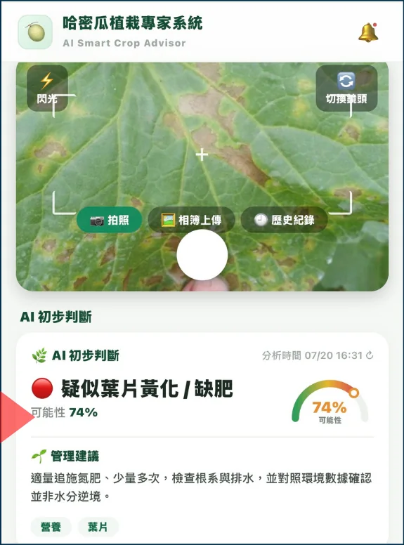

11 / LIMITATIONS原型目前
原型目前
還不能做什麼
把限制明確寫出來，是研發可信度的一部分。下列功能已有介面或操作流程，但成熟度不同。
功能目前狀態需要補上的工作
文字問答已實作
建立正式題集與專家評分
來源標示已實作
檢查引用完整性與版本更新
查詢紀錄已實作
確認舊答案與新情境的適用性
照片病名辨識模擬展示
接入真實視覺模型與影像資料集
環境趨勢圖模擬資料
介接真實 IoT 感測器與校正流程

DEMO DATAVISION STATUS
74% 不代表模型準確率
目前後端會從示範案例中產生病名和信心度，程式以 visionMock: true 標記。畫面用來展示操作流程，不能當作真實影像判讀成果。
正式版本需要取得授權且有標註的作物病徵影像，建立訓練或評估流程，並觀察誤判造成的農務風險。